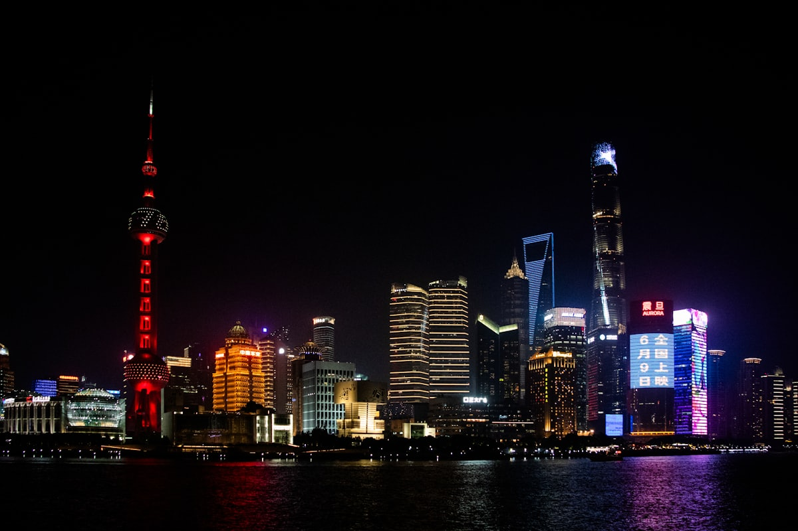
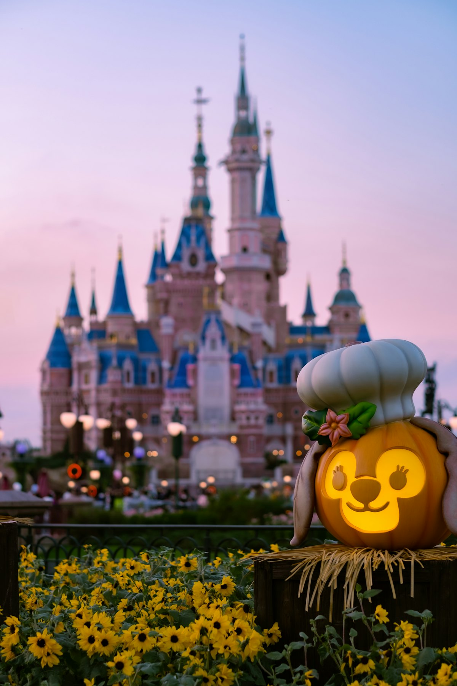
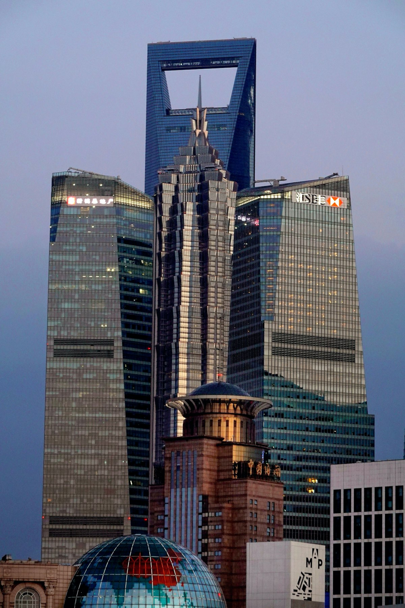
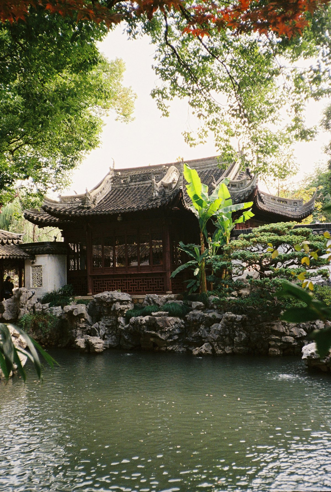
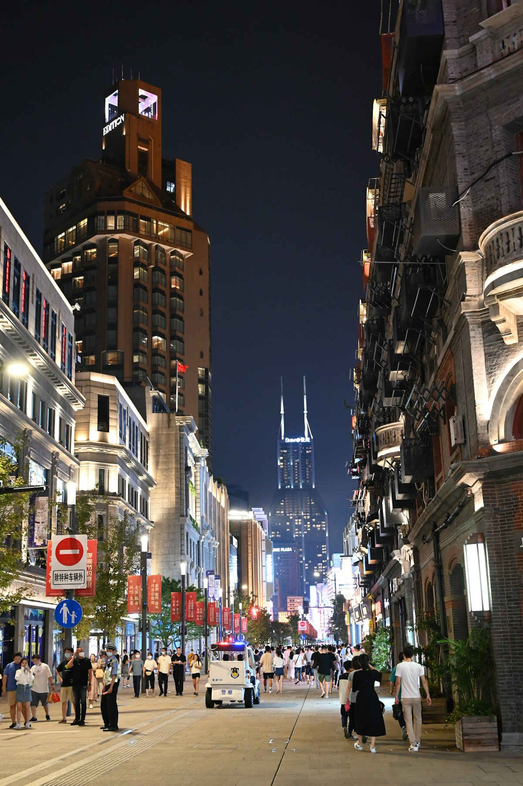
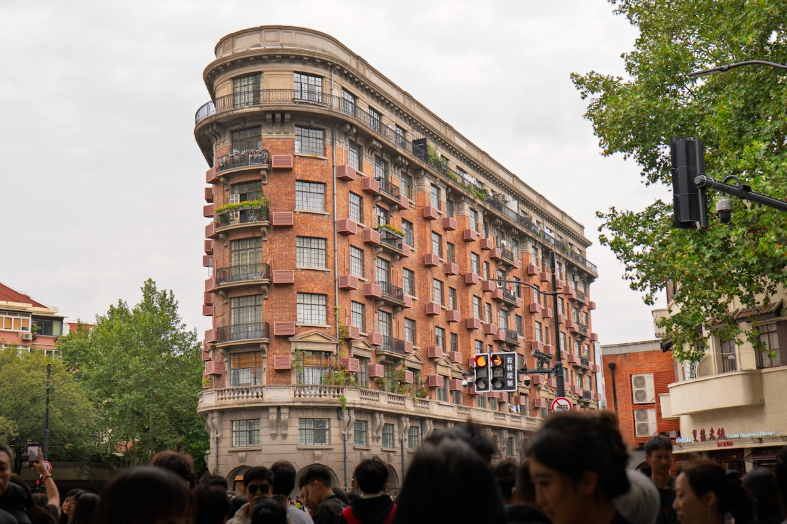
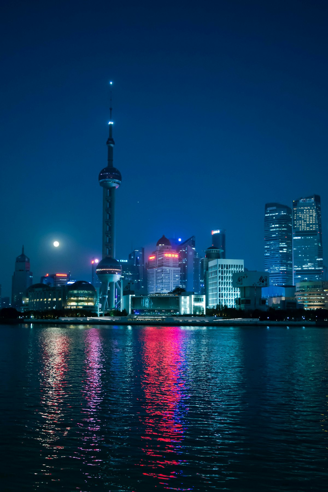
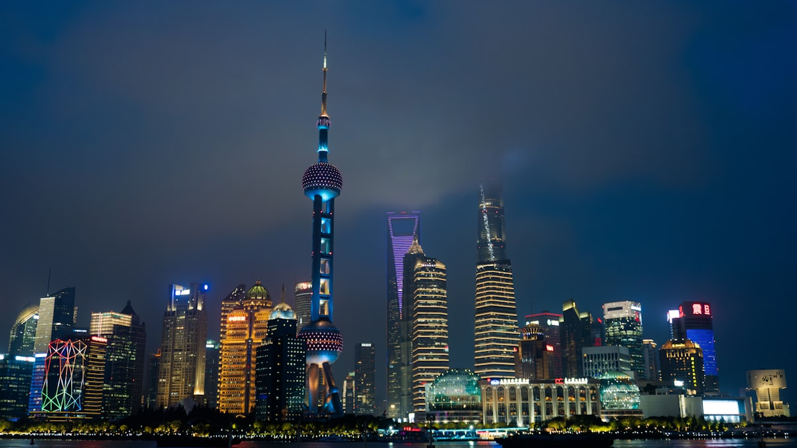

| 事项 | 结论 |
|---|---|
| 事项 | 结论 |
| 推荐方案 | 10 天 9 晚（含 1 个乐园日 + 1 个水乡日） |
| 返程约束 | 第 10 天下午/晚间返程 |
| 行程链 | 外滩 → 陆家嘴 → 豫园 → 迪士尼 → 武康路 → 朱家角 |
| 预算（人均） | 经济 4500–5500 ／ 标准 7000–9000 ／ 舒适 11000–14000 |
| 三件提前事 | ① 迪士尼提前订票 + 下官方 App 抢热门项目 ② 外滩夜景选工作日晚 ③ 酒店提前 2 周订 |
| 季节提醒 | 春秋最舒适；梅雨季（6 月中–7 月初）潮湿闷热，暑期乐园人多排队长 |
| 交通卡 | 地铁全线支持手机扫码，无需办卡 |
以下为 10 天 9 晚的推荐节奏。每日主景点 ≤2 个，迪士尼与水乡各留一整天。
| 日期 | 行程 | 过夜地 | 主题 |
|---|---|---|---|
| D1 抵沪 | 入住南京东路/人民广场，傍晚南京路步行街 + 外滩夜景 | 南京东路一带 | 抵达 + 预热 |
| D2 | 外滩（白天）→ 陆家嘴（东方明珠/上海中心）→ 滨江大道 → 外滩夜景 | 陆家嘴/外滩 | 摩天都市 |
| D3 | 豫园 + 城隍庙 → 老城厢巷弄 → 田子坊（傍晚） | 豫园一带 | 老城风韵 |
| D4 | 上海博物馆 → 人民广场 → 新天地 → 思南路 | 新天地一带 | 海派文博 |
| D5 | 武康路 → 衡山路 → 徐家汇源（天主堂/观象台） | 徐汇一带 | 梧桐街区 |
| D6 | 上海迪士尼乐园（全天 + 夜场烟花） | 川沙/迪士尼 | 童话一日 |
| D7 | 朱家角古镇（水乡）→ 返回市区 | 市区 | 江南水乡 |
| D8 | 上海中心观光厅 → 世博滨江 → 中华艺术宫 | 世博/陆家嘴 | 云端与世博 |
| D9 | 共青森林公园 或 上海科技馆（二选一）→ 大学路 | 市区 | 松弛一日 |
| D10 返程 | 上午自由活动/采购伴手礼，下午返程 | — | 收尾 |
以下为 10 天全程的逐小时执行时间线，可当作「当天打开照着走」的清单。标注 ※ 的可选项视体力与天气取舍。
| 时间 | 事项 |
|---|---|
| 14:00–17:00 | 抵达上海（高铁到虹桥/上海站，飞机到虹桥/浦东两场），地铁进城入住 |
| 17:30–18:30 | 办理入住（推荐南京东路/人民广场，近地铁与外滩） |
| 19:00–21:00 | 南京路步行街散步：老字号（沈大成、第一食品）、霓虹夜景，晚餐本帮菜或生煎 |
| 21:00 | 回酒店休息，调整状态 |
| 时间 | 事项 |
|---|---|
| 08:30–10:30 | 外滩（免费）：万国建筑博览群、陈毅广场、观光平台看浦江对岸 |
| 10:30–11:30 | 外滩隧道或打车过江到陆家嘴（地铁 2 号线南京东路→陆家嘴） |
| 11:30–13:00 | 陆家嘴午餐，可在国金中心/正大广场 |
| 13:00–16:00 | 东方明珠（参考价 220 元）或 上海中心观光厅（180 元）登高俯瞰 |
| 16:30–18:00 | 滨江大道散步，看黄浦江游船与落日 |
| 19:00–21:00 | 回到外滩看夜景，或黄浦江游船（参考价 100–150 元）夜航 |
| 21:30 | 回酒店 |
| 时间 | 事项 |
|---|---|
| 08:30–12:00 | 豫园（参考价 40 元）：江南园林典范，玉玲珑、三穗堂、九曲桥 |
| 12:00–13:00 | 城隍庙周边午餐：南翔小笼、蟹壳黄、梨膏糖 |
| 13:30–16:00 | 城隍庙（香火 10 元）→ 豫园商城，逛老字号与文创 |
| 16:30–18:00 | 老城厢巷弄（方浜中路一带）步行，感受老上海底子 |
| 18:30–21:00 | 田子坊（免费）：弄堂艺术区，小店、咖啡、画廊 |
| 21:30 | 回酒店 |
| 时间 | 事项 |
|---|---|
| 09:00–13:00 | 上海博物馆（免费需预约）：青铜器、陶瓷、书画馆藏顶级 |
| 13:00–14:00 | 人民广场附近午餐 |
| 14:30–17:00 | 新天地（免费）：石库门老建筑改造街区，中共一大会址可顺访 |
| 17:00–18:30 | 思南路骑行：思南公馆、周公馆，梧桐树下的老洋房 |
| 19:00 | 晚餐：新天地/淮海路，体验精致餐饮 |
| 时间 | 事项 |
|---|---|
| 08:30–11:30 | 武康路（免费）：武康大楼、沿街百年洋房、咖啡馆，梧桐树影 |
| 11:30–13:00 | 武康路/安福路午餐（网红咖啡馆与小店） |
| 13:30–15:30 | 衡山路骑行：法国梧桐大街，梧桐别墅区 |
| 16:00–18:00 | 徐家汇源：徐家汇天主堂、观象台旧址、藏书楼 |
| 18:30 | 晚餐：徐家汇商圈 |
| 时间 | 事项 |
|---|---|
| 07:30–08:00 | 地铁 11 号线迪士尼站/打车，提前到乐园门口排队安检 |
| 08:30 | 开园直奔热门：创极速光轮 / 飞越地平线（下 App 抢预约等候卡） |
| 12:00–13:00 | 园区内午餐（可提前订园区餐厅） |
| 13:00–17:00 | 主玩加勒比海盗、七个小矮人矿车、城堡巡游 |
| 17:00–18:30 | 米奇童话专列巡游 + 轻松项目 |
| 19:30–21:00 | 烟花秀（奇梦之光幻影秀）：提前占位，奇想花园/城堡前 |
| 21:30 | 返程回酒店 |
| 时间 | 事项 |
|---|---|
| 08:30–10:00 | 地铁 17 号线朱家角站直达（约 1h） |
| 10:00–13:00 | 朱家角古镇（免费，小景点联票 60 元）：放生桥、课植园、北大街 |
| 12:00 | 古镇午餐：扎肉、阿婆粽、酱蹄髈 |
| 13:30–16:00 | 乘摇橹船游河道（参考价 60–80 元），逛西井街/漕港滩 |
| 16:30–18:00 | 返回市区 |
| 19:00 | 晚餐：市区自由选择 |
| 时间 | 事项 |
|---|---|
| 08:30–11:30 | 上海中心大厦观光厅（参考价 180 元）：118 层 546 米俯瞰全城 |
| 11:30–13:00 | 陆家嘴午餐 |
| 14:00–16:30 | 中华艺术宫（免费需预约）：原世博会中国馆，清明上河图多媒体馆（参考价 20 元） |
| 16:30–18:00 | 世博滨江：滨江步道骑行，看卢浦大桥日落 |
| 18:30 | 晚餐：世博源/梅赛德斯周边 |
| 时间 | 事项 |
|---|---|
| 09:00–12:00 | 共青森林公园（15 元，森林草坪野餐）或 上海科技馆（45 元，亲子科普） |
| 12:00–13:30 | 就近午餐 |
| 14:30–17:30 | 五角场/大学路（免费）：高校区街拍、咖啡馆、文创小店 |
| 18:00 | 晚餐：大学路夜市/五角场商圈 |
| 时间 | 事项 |
|---|---|
| 07:30–08:30 | 早餐、收拾行李并退房 |
| 08:30–11:30 | 自由活动：第一食品/沈大成买点心、大白兔奶糖、国际饭店蝴蝶酥 |
| 11:30–12:30 | 午餐 |
| 13:00–16:00 | 赴高铁站/机场（浦东机场可选磁悬浮），返程 |
必去（必去）/ 顺路（顺路）/ 可跳过（可跳过）。

必去
必去
必去
顺路
顺路
顺路
可跳过图片为 Unsplash 主题图（外滩、陆家嘴、迪士尼均为上海实景），用于页面配图。更多免费景点：城隍庙周边老城厢、田子坊、新天地、思南路、世博滨江。
点击左侧节点可在地图上定位；点击地图 marker 会高亮对应节点。坐标为 WGS-84 转 GCJ-02 纠偏后标注。
以下为单人、不含购物的估算；门票为旺季参考价，以现场为准。迪士尼按单日票计（两日票可摊薄单价）；交通按高铁往返计（从华东周边城市出发约 400–900 元），不同出发地浮动较大。
| 项目 | 经济（4500–5500） | 标准（7000–9000） | 舒适（11000–14000） |
|---|---|---|---|
| 往返交通 | 高铁约 400–900 | 高铁/飞机约 900–1600 | 飞机+接送约 2000–3000 |
| 住宿（9 晚） | 青旅/快捷 900–1400 | 连锁酒店 2000–3200 | 陆家嘴星级 5500–8000 |
| 门票 | 基础景点约 450 | 含迪士尼/观光厅约 1100 | 全含+演出约 1800 |
| 餐饮（10 天） | 700–1000 | 1400–1800（含本帮菜） | 2200–3000（精致餐饮） |
| 市内交通 | 地铁 120–180 | 地铁+打车 300–420 | 打车/包车 600–900 |
带娃推荐：迪士尼安排两日票（首日主玩、次日二刷热门+看烟花），上海科技馆、自然博物馆、海昌海洋公园替换部分人文行程；园区租童车省体力。
12–2 月游客少、外滩拍照干净，酒店比旺季低 30–50%；注意湿冷体感，迪士尼部分户外项目可能受低温影响，防寒装备必备。
| 方式 | 时长 | 参考价 | 备注 |
|---|---|---|---|
| 高铁（推荐） | 视出发地 2–6h | 二等座 200–700 元 | 虹桥/上海站为主，班次密集 |
| 飞机 | 视出发地 1–3h | 400–1800 元 | 虹桥/浦东两场，地铁/磁悬浮进城 |
| 自驾 | 视出发地 | 高速+停车费 | 市区停车贵，迪士尼建议地铁 |
| 区域 | 价格/晚 | 优点 | 短板 |
|---|---|---|---|
| 南京东路/人民广场 | 快捷 400–600 / 星级 800–1500 | 近外滩、南京路、地铁枢纽 | 游客多，旺季贵 |
| 陆家嘴/世纪大道 | 星级 900–2000 | 陆家嘴夜景与滨江 | 商务区餐饮偏贵 |
| 新天地/淮海路 | 民宿/精品 500–900 | 梧桐街区、老洋房体验 | 部分民宿隔音一般 |
| 川沙（迪士尼） | 主题/快捷 400–700 | 近迪士尼、含接驳 | 离市中心约 1h |